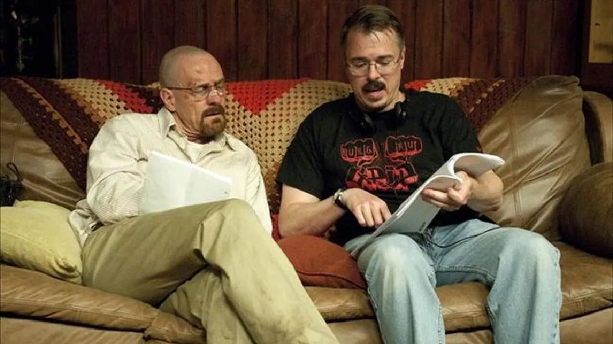
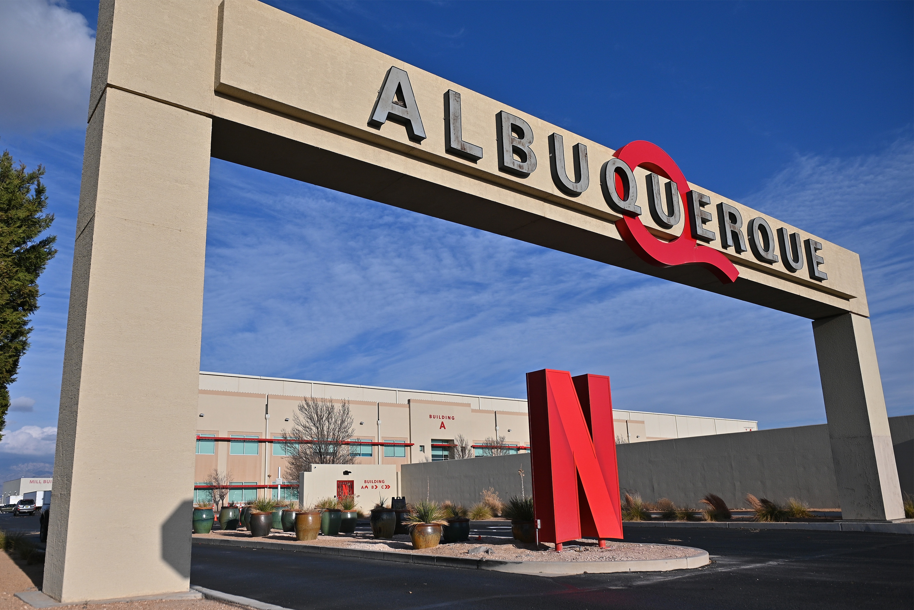
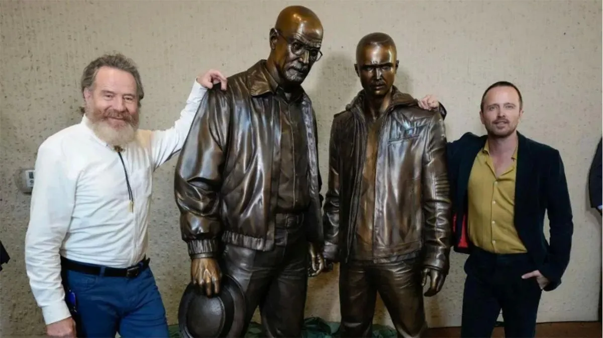
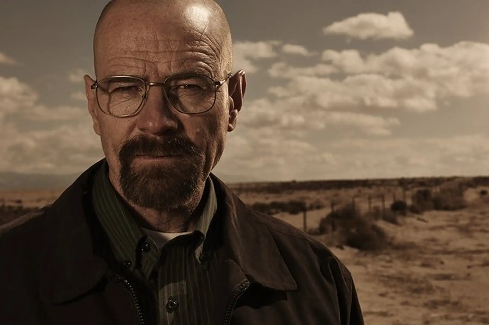
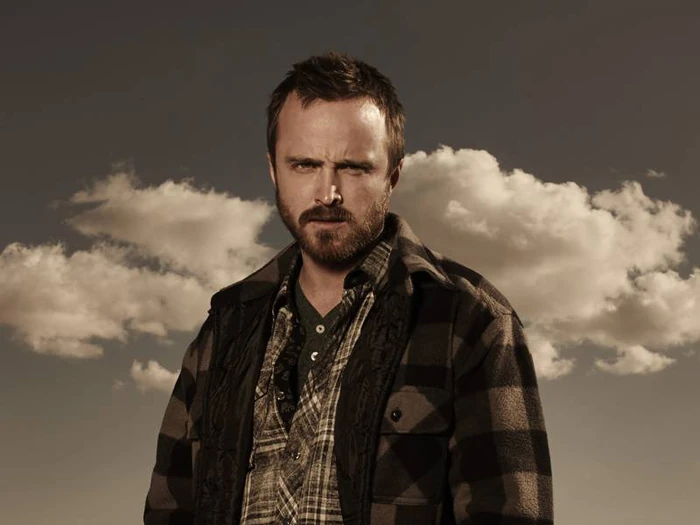
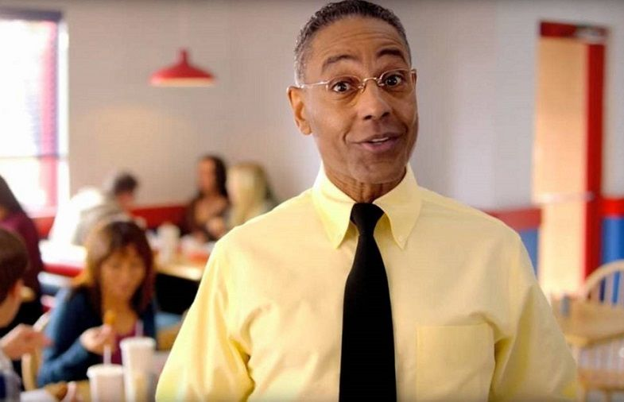
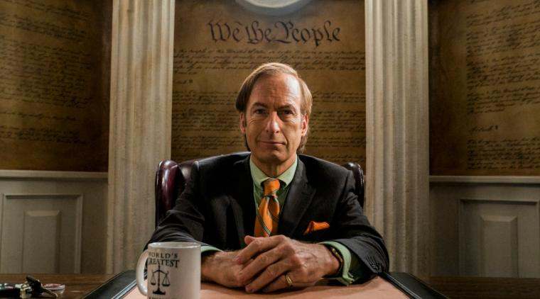

Breaking Bad


Autor

El autor de la serie "Breaking Bad" es Vince Gilligan, gionista y productor estadounidense, tambien creador de Better Call Saul. Ha trabajado en variedad de series y peliculas reconocidas, por ejemplo The X Files y Los pistoleros solitarios, por ultimo, se graduo en la universidad de Nueva York.
Informacion y datos

La serie se desarrola en Estados Unidos, en concreto, en un estado del sur llamado Nuevo Mexico, y por ultimo en la pequeña cuidad de Alburquerque, es practicamente un desierto por el calor que hace en el lugar, la produccion de la serie eligio esta ciudad ya que en Nuevo Mexico
los costes de produccion de series son reducidos y Netflix tenia un presupuesto bajo para esa serie, al final, la ciudad se ha acabado convirtiendo en historia de Breaking Bad
La serie ha llegado a ser tan famosa que se ha convertido en una serie de culto, en Alburquerque, para rendir homenaje a la proclamada serie, le hicieron 2 estatuas a los protagonistas, Walter White y Jesse Pikman, fueron esculpidas por Trevor Grove y estan hehcas de bronce, actualmente las estatuas se encuentran en el centro de convenciones de Alburquerque, que es la ciudad mas grande de Nuevo Mexico, y tiene estatuas de Breaking Bad !!

Potagonistas

Walter White, tambien conocido como Walt para las personas cercanas y como Heisenberg en el mundo del crimen, es el protagonista principal de la sere Breaking Bad. Fue hijo unico y perdio a su padre cuando tenia 6 años, destacando en el campo de la quimica con su ayudante de laboratorio, su pareja, Skyler, Walter creo una investigacion con su grupo pero acabo abandonando la fundacion vendiendo sus acciones, tuvo un hijo llamado Walter Jr que tiene paralisis cerebral, al final de todo, cuando contrajo cancer de pulmon empezo a hacer metanfetamina para conseguir dinero para su familia cuando el ya no este, asi se hizo conocido en el mundo del crimen como Heisenberg.
Jesse Pinkman, es un antiguo estudiante de el instituto de Alburquerque, los dos acabaron cocinando juntos ya que Jesse cocinaba antes con otro socio y Walter lo fue a buscar para cocinar, tiene un hermano pequeño y su familia es de Alburquerque, debido a sus problemas con las drogas los padres lo hecharon de casa con 18 años, es protagonista de una pelicula del universo de Breaking Bad en la que cuentan el final de Jesse y como acaba todo para el.


Gustavo Fring era el líder criminal de un imperio de drogas y el dueño de la cadena de restaurantes Los Pollos Hermanos. Un magnate de negocios y filántropo nacido en Chile. Inicialmente estaba afiliado al Cártel de Juárez, que utilizaba en secreto sus restaurantes como una tapadera legítima para la distribución de metanfetamina en todo el suroeste de Estados Unidos. Al igual que Walter White, Gus era un criminal que se escondía "en plena vista," recurriendo a su posición social como filántropo para ocultar su verdadera naturaleza según construía su imperio.
James "Jimmy" Morgan McGill, conocido posteriormente como Saul Goodman, es un abogado criminal de Albuquerque conocido en la ciudad por sus peculiares anuncios televisivos que se emiten a altas horas de la noche, en el que menciona su lema, "Better Call Saul!" El nombre de Goodman es inventado para atraer a más clientes, ya que Saul Goodman se pronuncia como "it's all good man" (está todo bien, hombre). A pesar de su turbia apariencia, Saul sin duda es un hombre muy competente en sus asuntos criminales, eficiente a la hora de descubrir lagunas legales en casos y capaz de negociar buenos tratos en favor de sus clientes.

Contacto